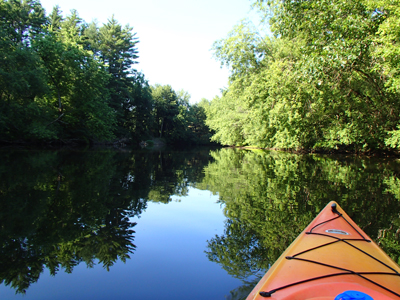

2013 Nashoba Paddler Tours
Our tours are kept small so we maximize our enjoyment and minimize our impact on the environment. Prices include the use of our boats, paddles, and personal flotation devices. (You may use your own equipment if you prefer.) Our guides are naturalists as well as American Canoe Association certified instructors who are there to share their knowledge of the river and help you with your paddling, if you need it. Tours are geared for beginner/intermediate paddlers and are very relaxed with the objective of observing and enjoying the nature around us.
TO REGISTER for tours, please complete the Tour & Instruction Registration/ Liability Release Form and mail with payment to:
Nashoba Paddler, LLC
PO Box 228
West Groton, MA 01472
Monthly Nature Tours
Spring Birding by Canoe/Kayak
MAY 11, 8-11AM
Do you know which bird says "Hip, hip, hip hooray boys! Spring is here!"? Come find out what the birds are saying on a morning of paddling and birding on the Squannacook River. Migrating birds, back from their southern haunts, will be singing away to attract mates. It's the weekend of the year for birding! Basic paddling and safety will be covered. Boats, paddles, and PFD's are included. Bring binoculars and field guides if you have them.
Trip difficulty: Easy, flat-water, 4 miles roundtrip.
Trip Leader: Bert Hogan
Cost: $32pp-canoe, $52pp-kayak.
REGISTRATION REQUIRED
Full Moon Canoeing
CHOOSE ONE OF THE FOLLOWING DATES:
MAY 25, 7:30-10:30PM
JUNE 22, 7:30-10:30PM
JULY 20, 7:30-10:30PM
AUG 17, 7:30-10:30PM
Set out by canoe at dusk. As the darkness approaches, watch the moon rise, following its ribbon of light as we paddle. Perhaps we'll catch a glimpse of an owl or a night hawk or a beaver. We'll stop for refreshments, looking out over the water, listening to the night sounds, enjoying this memorable experience together. Basic paddling and safety will be covered. Boats, paddles, and PFD's are included.
Trip difficulty: Easy, flat-water, 5 miles roundtrip.
Cost: $37pp-canoes only. Refreshments included.
REGISTRATION REQUIRED

Paddling with Beavers
JUNE 8, 6-9PM
An evening paddle on the river at this time of year almost always affords an encounter with a beaver, an experience you won't soon forget! Paddling past several lodges, we're often greeted with a tail slap letting us know who's territory we're visiting. We'll take a stop along the way for a light dinner break. Basic paddling and safety will be covered. Boats, paddles, and PFD's are included.
Trip difficulty: Easy, flat-water, 4 miles roundtrip
Cost: $32pp-canoe, $52pp-kayak (Box dinner available for an additional cost or pack your own)
REGISTRATION REQUIRED

Morning Wildlife on the Nashua
JULY 6, 9AM- NOON
A peaceful summer morning is a great time to experience the wildlife of the Nashua River. Enjoy a guided tour with one of our knowledgeable guide/naturalists. Sightings have included swans, muskrats, mink, herons, osprey, and many more. Of course there are no guarantees of what we will see, but having a guide who is very familiar with this area, we'll have a good chance and a lot of fun exploring! Basic paddling and safety will be covered. Boats, paddles, and PFD's are included.
Trip difficulty: Easy, flat-water, 4-5 miles roundtrip.
Cost: $32pp-canoe, $52pp-kayak.
REGISTRATION REQUIRED

Family Paddling with Turtles
AUG 3, 10AM-1PM
Enjoy a leisurely guided tour along the river and into a pond area filled with turtles. Sightings have included painted turtles, snapping turtles, musk turtles, and other wildlife. Our experienced guide/naturalists are very familiar with this area and enjoy sharing their knowledge of its recent animal activity. A light snack and some tools to enhance our learning will be provided. We'll stop along the river for a lunch break. Basic paddling and safety will be covered. Boats, paddles, and PFD's are included.
Trip difficulty: Easy, flat water, 3 miles roundtrip.
Cost: $64 per canoe- canoes only. (Box lunch available for an additional cost or pack your own)
REGISTRATION REQUIRED
Bertozzi Wildlife Management Area Paddle
AUG 31, 10AM-2PM
Enjoy the adventure of paddling a narrow, meandering section of the Squannacook River ending just below a small set of rapids. We'll stop to explore, have some lunch, and take a quick dip in the river before heading back. Basic paddling and safety will be covered. Boats, paddles, and PFD's are included.
Trip difficulty: Easy/moderate, flat water with some maneuvering required, 4 miles roundtrip.
Cost: $42pp-canoe, $62pp-kayak (Box lunch available for an additional cost or pack your own)
REGISTRATION REQUIRED

Oxbow National Wildlife Refuge Paddle
SEPT 14, 10AM-2PM
A wildlife refuge is an area set aside to conserve and protect native wildlife habitats and species. A downstream paddle through the Oxbow National Wildlife Refuge will give us the chance to explore approximately 5 miles of the Nashua River in the refuge. Oddly, a section of the river is also bordered by an Army training area! Basic paddling and safety will be covered. Boats, paddles, and PFD's are included.
Trip difficulty: Easy, flat water, 5 miles downstream.
Cost: $42pp-canoe, $62pp-kayak (Box lunch available for an additional cost or pack your own)
REGISTRATION REQUIRED

Fitch's Bridge Paddle
SEPT 28, 11AM- 2PM
The town of Groton recently approved the replacement of Fitch's Bridge over the Nashua River, once again connecting West Groton and Groton. Pedestrians, bicyclists, and equestrians will be crossing the bridge as we paddle beneath them. Learn the story of this historic location and enjoy a leisurely downstream paddle. We will stop for a lunch break at the bridge. Basic paddling and safety will be covered. Boats, paddles, and PFD's are included.
Trip difficulty: Easy, flat-water, 3 mile downstream paddle.
Cost: $32pp-canoe, $52pp-kayak (Box lunch available for an additional cost or pack your own)
REGISTRATION REQUIRED

Fall Foliage Paddle
OCT 12, 11AM-2PM
The Squannacook River is the gem of the Nashua River Watershed. Its narrow, twisting passage meanders through areas of lily ponds and woodlands. The reflections of autumn foliage enhance the special beauty of this river. We'll stop for a picnic along the way. Basic paddling and safety will be covered. Boats, paddles, and PFD's are included.
Trip difficulty: Easy, flat-water, 4 miles roundtrip.
Cost: $32pp-canoe, $52pp-kayak. (Box lunch available for an additional cost or pack your own)
REGISTRATION REQUIRED
Halloween Canoeing
OCT 26, 12:30- 2:30PM
End the paddling season with a little fun! Participants are encouraged (but NOT required) to put on a disguise and paddle with us! We'll stop for some hot drinks and a snack. A prize will be given to the person with the most creative costume. (Note: Costumes must not be unsafe!) Basic paddling and safety will be covered. Boats, paddles, and PFD's are included.
Trip difficulty: Easy, flat-water, 3 miles roundtrip.
Cost: $64 per canoe-canoes only (Refreshments included)
REGISTRATION REQUIRED

Whitewater Reunion
AUGUST 7 - 9, Wed 8:30am - Fri 8:30pm
This instructional program is for young adults with whitewater canoeing experience who want an opportunity to use and improve their paddling skills and learn more about rivers. Three intense days of paddling on class 1 and 2 rapids on the Deerfield River in western Massachusetts, two nights camping on the riverside, combined with study about the river's history and current issues allows them to deepen their appreciation of this beautiful river. Taught by an American Canoe Association Level 4 Whitewater Canoeing Instructor. (Prerequisite: River Camp "Leadership Expedition" or two years of "Adventure Challenge" or similar experience. Must meet certain swimming requirements–Red Cross Level 4 or equivalent)
Price includes use of necessary paddling and camping equipment except sleeping bag and personal gear. Price also includes 2 breakfasts, 2 lunches, and 2 dinners. Participant is responsible for lunch on Day 1 and dinner at a restaurant on Day 3.
Cost: $320. For young adults ages 15-20.
REGISTRATION REQUIRED

Birthday Parties
Guided Parties
Options for any age! Guided parties include 2 hours of paddling and activities with a break for cupcakes. Choose from our theme party options and one of our fun-loving guides will lead your group on a memorable birthday adventure!
Cost: $22/person-canoe (3 people per boat), $52/person-solo kayaks
Minimum of 8 people, maximum 24 people (including adults)
Locally baked birthday cupcakes from Dulce Amor Cakes are included!
Pick from one of our paddling party themes!
- River Scavenger Hunt
- Nature Arts and Crafts
- Paddling Games
- Relaxing Scenic Paddle
Self Guided Parties
If you prefer to go out on the water without a guide, your party can rent boats and enjoy a beautiful day out on the river! Check out some of our group rental options to get some ideas! (10% discount on rentals with 6 boats or more)
Cupcakes are available for $1.50/person (minimum 20 cupcakes)
Custom Guided Tours
Families, friends, companies, clubs, groups, youth groups! If you have at least 5 boats, we'll arrange a special guided tour for you on the Nashua or Squannacook Rivers. Choose from one of the nature tours listed above or we'll customize something for your group. Call us for details!
We have some interesting group rental options if you prefer to head out on your own.

Nashoba Paddler, LLC
978-448-8699
LOCATION: 398 West Main St. (Rt. 225), Groton, Ma
MAILING ADDRESS: PO Box 228, West Groton, Ma 01472
All rights reserved, Nashoba Paddler, LLC 2013 ©